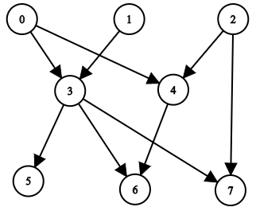
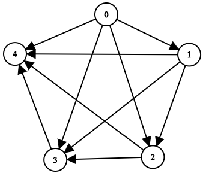

| Category | Difficulty | Likes | Dislikes |
|---|---|---|---|
| Algorithms | Medium | 1737 | 44 |
google | amazon | facebook | oracle
You are given a positive integer n representing the number of nodes of a Directed Acyclic Graph (DAG). The nodes are numbered from 0 to n - 1 (inclusive).
You are also given a 2D integer array edges, where edges[i] = [fromi, toi] denotes that there is a unidirectional edge from fromi to toi in the graph.
Return a list answer, where answer[i] is the list of ancestors of the ith node, sorted in ascending order.
A node u is an ancestor of another node v if u can reach v via a set of edges.
Example 1:

Input: n = 8, edgeList = [[0,3],[0,4],[1,3],[2,4],[2,7],[3,5],[3,6],[3,7],[4,6]]
Output: [[],[],[],[0,1],[0,2],[0,1,3],[0,1,2,3,4],[0,1,2,3]]
Explanation:
The above diagram represents the input graph.
- Nodes 0, 1, and 2 do not have any ancestors.
- Node 3 has two ancestors 0 and 1.
- Node 4 has two ancestors 0 and 2.
- Node 5 has three ancestors 0, 1, and 3.
- Node 6 has five ancestors 0, 1, 2, 3, and 4.
- Node 7 has four ancestors 0, 1, 2, and 3.Example 2:

Input: n = 5, edgeList = [[0,1],[0,2],[0,3],[0,4],[1,2],[1,3],[1,4],[2,3],[2,4],[3,4]]
Output: [[],[0],[0,1],[0,1,2],[0,1,2,3]]
Explanation:
The above diagram represents the input graph.
- Node 0 does not have any ancestor.
- Node 1 has one ancestor 0.
- Node 2 has two ancestors 0 and 1.
- Node 3 has three ancestors 0, 1, and 2.
- Node 4 has four ancestors 0, 1, 2, and 3.
Constraints:
1 <= n <= 10000 <= edges.length <= min(2000, n * (n - 1) / 2)edges[i].length == 20 <= fromi, toi <= n - 1fromi != toi